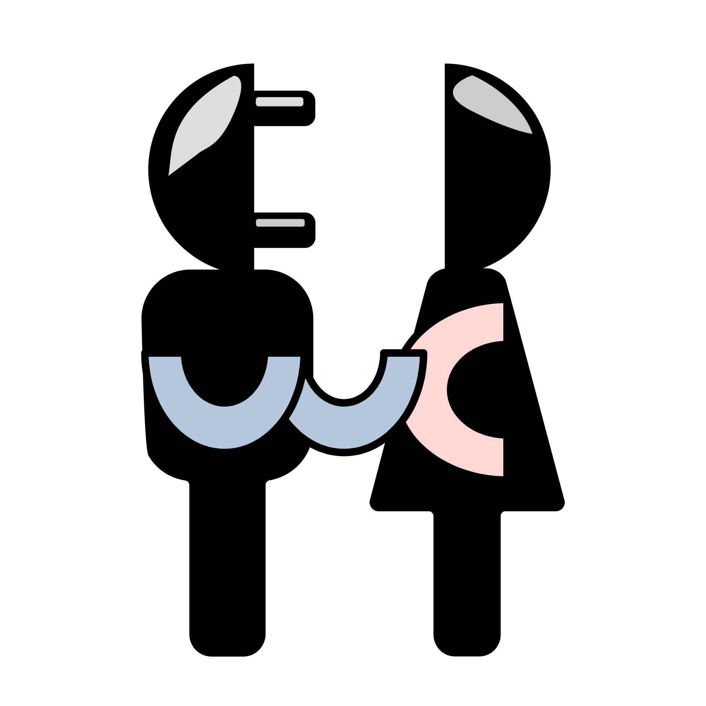

wcWebCamClient lib
v0.7
wcWebCamClient library API User's Guide
Table of Contents
JSON sub-protocol description
A set of current REST Web Camera Server configurations
Data stream format
output.raw
input.raw
JSON_BAD message format
wcWebCam Structure
wcWebCamServer - REST Web Camera server sources
wcWebCamClient library header
Globals All
API Functions
Variables and Consts
Typedefs
Enums
Library typedefs and consts for returned results
Library functions and typedefs to set callbacks for client
Library functions and typedefs to get or set state values for client and tasks
Library functions to manage client
Library functions to send common requests by client
Library functions to manage with output stream frames
Library functions to manage with background tasks
Library functions to manage with incoming streams
Example
Contributions
Generated on Thu Dec 8 2022 11:56:29 for wcWebCamClient lib by
1.9.1